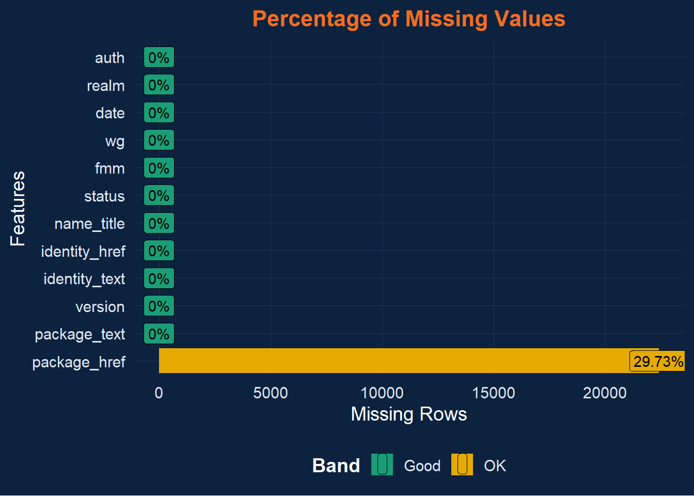
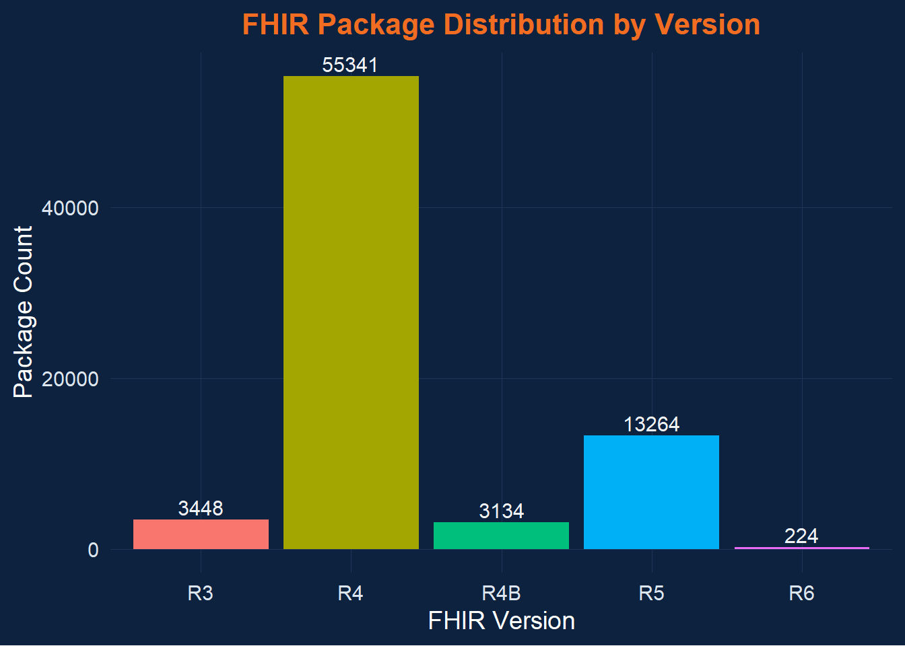
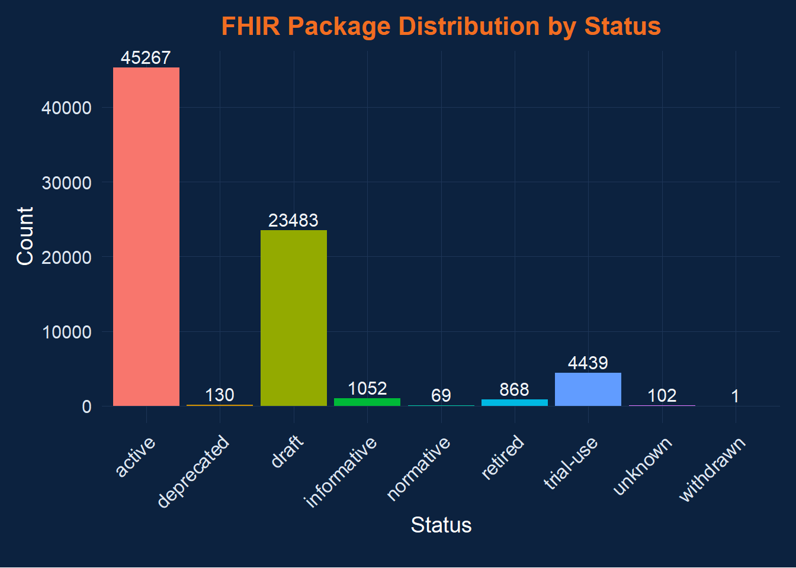
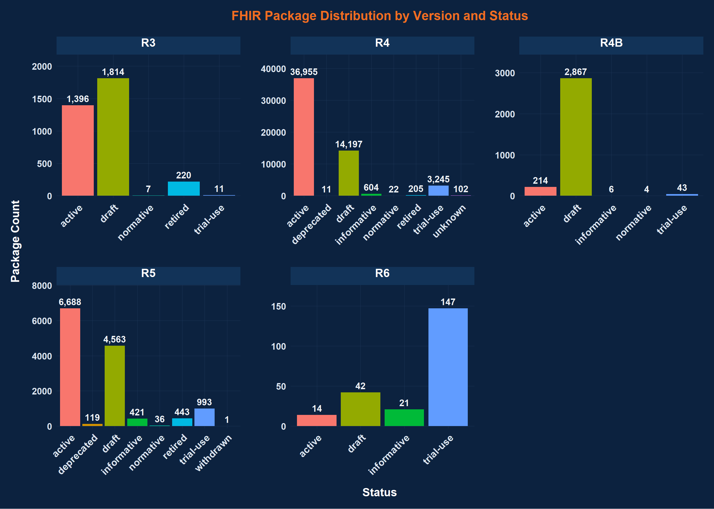
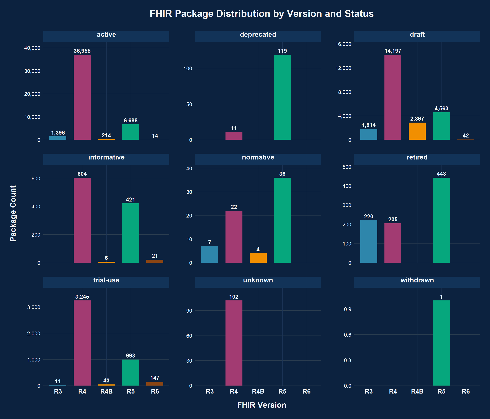

The Fast Healthcare Interoperability Resources (FHIR®) standard is the foundation for modern health data exchange. With the growing number of implementation guides (IGs), extensions, and reusable data artifacts published across the healthcare ecosystem, understanding how these packages evolve is essential for data quality, interoperability, and analytics readiness.
This project focuses on Exploratory Data Analysis (EDA) of the FHIR Package Index - a comprehensive dataset of published FHIR packages hosted at packages2.fhir.org/xig. Each package in this dataset represents a distinct FHIR resource collection, containing metadata such as version, working group, publication date, and development maturity level (FMM).
The primary goals of this analysis are to:
Explore the structure and composition of FHIR packages across different versions.
Identify publication trends - including the number of active vs. draft packages and their distribution over time.
Assess maturity and adoption patterns using the FHIR Maturity Model (FMM) levels.
Understand working group contributions and how they align with key healthcare domains (clinical, administrative, financial).
Visualize the ecosystem to provide actionable insights for interoperability stakeholders, developers, and data scientists.
The dataset used in this analysis was collected directly from the FHIR Package Index hosted at packages2.fhir.org/xig, an official registry maintained by HL7®. This index lists all publicly available FHIR Implementation Guides (IGs) and associated resource packages. Each entry in the index includes metadata describing the package name, version, identity, publication status, working group, FHIR maturity level (FMM), release date, realm, and authorship.
To build the dataset, an automated web-scraping script was
developed in R using the rvest, httr2, and
jsonlite libraries. The script iteratively navigates
through the paginated web interface (200 entries per page), extracts
each package’s metadata, and compiles them into structured JSON and
NDJSON formats. This approach ensures that the data is comprehensive and
up to date with the latest package releases.
The final dataset contains over 75,000 FHIR package records, representing various FHIR versions and working groups across multiple healthcare domains. These records were then transformed into a dataframe within R for further exploration and visualization. The collection process preserves transparency and reproducibility, making the dataset suitable for large-scale analysis and trend identification within the FHIR ecosystem.
# Data handling & Manipulation
library(jsonlite)
library(dplyr)
library(tidyr)
library(readr)
library(stringr)
library(lubridate)
# Visualization
library(scales)
library(ggplot2)
theme_healthchain <- function(base_size = 14) {
theme_minimal(base_size = base_size) +
theme(
plot.title = element_text(
face = "bold",
color = "#f26d21", # Health Chain orange
hjust = 0.5,
size = base_size + 2
),
axis.title = element_text(color = "#ffffff"),
axis.text = element_text(color = "#dce6f1"),
panel.background = element_rect(fill = "#0c223f", color = NA),
plot.background = element_rect(fill = "#0c223f", color = NA),
legend.background = element_rect(fill = "#0c223f", color = NA),
legend.text = element_text(color = "#dce6f1"),
legend.title = element_text(color = "#ffffff", face = "bold"),
strip.background = element_rect(fill = "#123358", color = NA),
strip.text = element_text(color = "#ffffff", face = "bold"),
panel.grid.major = element_line(color = "#1d3557", size = 0.3),
panel.grid.minor = element_blank(),
legend.position = "none"
)
}
# Apply globally to all ggplots
theme_set(theme_healthchain())
library(scales)
library(viridis)
# EDA Utilities
library(skimr)
library(DataExplorer)
library(summarytools)
# Table Rendering & Reporting
library(knitr)
library(kableExtra)
library(DT)# read full JSON array
data <- fromJSON("xig_resources.json", flatten = TRUE)
# convert to dataframe
df <- as.data.frame(data)
glimpse(df)## Rows: 75,411
## Columns: 12
## $ package_text <chr> "hl7.fhir.uv.vulcan-schedule", "smart.who.int.base", "hl…
## $ package_href <chr> "https://build.fhir.org/ig/HL7/Vulcan-schedule-ig/", "ht…
## $ version <chr> "R4", "R4", "R5", "R5", "R5", "R5", "R5", "R5", "R5", "R…
## $ identity_text <chr> "ActivityDefinition/H2Q-MC-LZZT-Vital-Signs-Temperature"…
## $ identity_href <chr> "/xig/resource/hl7.fhir.uv.vulcan-soa%7Ccurrent/Activity…
## $ name_title <chr> "Vital Signs - Temperature", "SGDecisionTableGuidance", …
## $ status <chr> "active", "draft", "active", "active", "active", "active…
## $ fmm <chr> "", "", "", "", "", "", "", "", "", "", "", "", "", "", …
## $ wg <chr> "", "", "", "", "", "", "", "", "", "", "", "", "", "", …
## $ date <chr> "2023-04", "2025-06", "2024-05", "2024-05", "2025-08", "…
## $ realm <chr> "uv", "", "uv", "uv", "pl", "pl", "pl", "pl", "pl", "pl"…
## $ auth <chr> "hl7", "who", "hl7", "hl7", "hl7", "hl7", "hl7", "hl7", …Using skimr to understand the data summary in a tabular
form
skimmed <- skim(df)
kable(
skimmed,
format = "html",
booktabs = TRUE
) %>%
kable_styling(
full_width = FALSE,
font_size = 12,
bootstrap_options = c("striped", "condensed", "responsive")
) %>%
scroll_box(width = "100%", height = "500px")| skim_type | skim_variable | n_missing | complete_rate | character.min | character.max | character.empty | character.n_unique | character.whitespace |
|---|---|---|---|---|---|---|---|---|
| character | package_text | 0 | 1.0000000 | 3 | 58 | 0 | 1096 | 0 |
| character | package_href | 22423 | 0.7026561 | 4 | 112 | 0 | 601 | 0 |
| character | version | 0 | 1.0000000 | 2 | 3 | 0 | 5 | 0 |
| character | identity_text | 0 | 1.0000000 | 11 | 115 | 0 | 72073 | 0 |
| character | identity_href | 0 | 1.0000000 | 44 | 163 | 0 | 75271 | 0 |
| character | name_title | 0 | 1.0000000 | 0 | 261 | 62 | 66231 | 0 |
| character | status | 0 | 1.0000000 | 5 | 11 | 0 | 9 | 0 |
| character | fmm | 0 | 1.0000000 | 0 | 1 | 67991 | 7 | 0 |
| character | wg | 0 | 1.0000000 | 0 | 8 | 65241 | 30 | 0 |
| character | date | 0 | 1.0000000 | 0 | 7 | 10639 | 193 | 0 |
| character | realm | 0 | 1.0000000 | 0 | 10 | 22398 | 39 | 0 |
| character | auth | 0 | 1.0000000 | 0 | 8 | 25640 | 5 | 0 |
Total Variables: 11 (all character type)
Total Records: ~75,000 FHIR package entries
package_text – Fully complete (no missing values);
contains 1,096 unique package names.
package_href – About 30% missing (complete_rate =
0.70); 601 unique hyperlinks to package definitions.
version – Consistently present with 5 unique values
(likely representing FHIR versions like R2–R5).
identity_text / identity_href – Both
complete and unique for almost every record (over 70k unique
identifiers).
name_title – Fully populated, contains descriptive
names or titles (up to 261 characters); 66k unique entries.
status – 9 unique values (e.g., active, draft,
retired), with full completeness across records.
fmm (FHIR Maturity Model) – Mostly empty (~90%
blank); only 7 unique maturity levels recorded.
wg (Working Group) – Sparse data; 30 unique working
groups identified, but ~65k empty values.
date – Present for all records, with 193 unique date
entries (likely publication dates).
realm – Optional metadata; 39 unique realms (e.g.,
US, AU, UK), ~22k missing.
auth – Author or organization field, lightly
populated (only 5 unique values).
Core technical identifiers (identity_text,
identity_href) are strong and unique.
Descriptive and governance fields (wg,
fmm, realm, auth) have high
sparsity.
Excellent completeness for essential attributes
(name, version, status).
Text length variability indicates diverse and detailed metadata descriptions.
The FHIR package dataset demonstrates a generally strong structural
quality, with all 11 variables consistently defined and
fully aligned across nearly 75,000 records. Core technical fields such
as identity_text, identity_href,
package_text, and version show excellent
completeness and uniqueness, ensuring reliable identification of each
FHIR package. These attributes form the backbone of the dataset and can
be confidently used for trend, frequency, and relationship analyses.
However, several descriptive and governance-related attributes -
notably fmm, wg, realm, and
auth - exhibit significant sparsity. The FHIR Maturity
Model (fmm) field is largely missing, limiting the ability
to analyze maturity progression across resources. Similarly,
wg (Working Group) and realm values are incomplete for many
packages, suggesting gaps in metadata publication or inconsistencies in
source documentation.
Textual attributes such as name_title and
status are well-populated and diverse, offering good
analytical potential for classification and pattern exploration.
Overall, while the dataset provides robust coverage for technical and
structural aspects, additional enrichment or cross-referencing may be
necessary for deeper organizational or maturity-related analyses. This
quality profile makes the dataset ideal for exploratory visualization,
version distribution analysis, and metadata completeness assessment
across the FHIR ecosystem.
This exploratory analysis primarily employs Descriptive Statistics to understand the structure and characteristics of the FHIR Package dataset. Since the data represents the complete population of publicly available FHIR Implementation Guides (IGs) and related resources from packages2.fhir.org/xig, inferential techniques-used to make generalizations from samples-are not required.
Descriptive statistics provide a concise summary of the dataset through measures such as counts, proportions, unique values, and completeness rates. These summaries, combined with graphical visualizations, reveal key insights into the distribution of FHIR versions, maturity levels (FMM), working group activity, and publication trends over time.
By focusing on descriptive methods, this analysis aims to characterize the dataset rather than predict or infer. The results highlight patterns, outliers, and relationships that inform a deeper understanding of how the FHIR ecosystem is evolving. Future work could incorporate inferential or predictive modeling to test specific hypotheses-such as identifying factors influencing resource maturity-but the current phase emphasizes clear, evidence-based exploration of the available data.
This section focuses on understanding, cleaning, and summarizing the FHIR package dataset. The goal is to get a clear view of what data you have, how it’s distributed, and whether it’s reliable.
Here’s what your Basic EDA should include:
DataExplorer::plot_missing(df,
title = "Percentage of Missing Values",
ggtheme = theme_healthchain(base_size = 14)
) 
df %>%
count(version) %>%
ggplot(aes(x = version, y = n, fill = version)) +
geom_bar(stat = "identity") +
geom_text(aes(label = n), vjust = -0.3, size = 4, color = "#f0f4f8") +
labs(
title = "FHIR Package Distribution by Version",
x = "FHIR Version",
y = "Package Count"
) 
df %>%
count(status) %>%
ggplot(aes(x = status, y = n, fill = status)) +
geom_col() +
geom_text(aes(label = n), vjust = -0.3, color = "#f0f4f8", size = 4) +
labs(
title = "FHIR Package Distribution by Status",
x = "Status",
y = "Count"
) +
theme_healthchain() +
theme(
axis.text.x = element_text(
angle = 45, # tilt labels
hjust = 1, # align text
vjust = 1,
size = 12,
color = "#dce6f1"
),
plot.margin = margin(10, 10, 20, 10)
)
auth_summary <- df %>%
count(auth, name = "Package_Count") %>%
arrange(desc(Package_Count))
kable(
auth_summary,
format = "html",
booktabs = TRUE
) %>%
kable_styling(
full_width = FALSE,
font_size = 12,
bootstrap_options = c("striped", "condensed", "responsive")
) | auth | Package_Count |
|---|---|
| hl7 | 42405 |
| 25640 | |
| national | 3470 |
| who | 2514 |
| ihe | 1382 |
# Count missing and empty values in auth
table <- df %>%
summarise(
total_rows = n(),
missing_auth = sum(is.na(auth)),
empty_auth = sum(auth == "", na.rm = TRUE),
total_missing = missing_auth + empty_auth,
missing_percent = round((total_missing / total_rows) * 100, 2)
)
kable(
table,
format = "html",
booktabs = TRUE
) %>%
kable_styling(
full_width = FALSE,
font_size = 12,
bootstrap_options = c("striped", "condensed", "responsive")
) | total_rows | missing_auth | empty_auth | total_missing | missing_percent |
|---|---|---|---|---|
| 75411 | 0 | 25640 | 25640 | 34 |
The plot shows 0% because DataExplorer counts only NA values as missing, while your auth field has empty strings (““) (and maybe whitespace), not NA.
df %>%
count(status, version) %>%
ggplot(aes(x = status, y = n, fill = status)) +
geom_col(show.legend = FALSE) +
geom_text(aes(label = scales::comma(n)),
vjust = -0.5,
size = 4.5, # Increased from 3.5
color = "#f0f4f8",
fontface = "bold") + # Made labels bold
facet_wrap(~ version, ncol = 3, scales = "free") +
labs(
title = "FHIR Package Distribution by Version and Status",
x = "Status",
y = "Package Count"
) +
theme_healthchain() +
theme(
axis.text.x = element_text(angle = 45, hjust = 1, size = 14, face = "bold"), # Increased from 11
axis.text.y = element_text(size = 13, face = "bold"), # Added y-axis text size
axis.title.x = element_text(size = 16, face = "bold", margin = margin(t = 15)), # Added x-axis title
axis.title.y = element_text(size = 16, face = "bold", margin = margin(r = 15)), # Added y-axis title
plot.title = element_text(size = 18, face = "bold", hjust = 0.5, margin = margin(b = 20)), # Added title
strip.text = element_text(size = 16, face = "bold", margin = margin(b = 10)), # Increased from 15
panel.spacing = unit(2, "lines"),
plot.margin = margin(t = 15, r = 15, b = 15, l = 15) # Increased margins
) +
scale_y_continuous(expand = expansion(mult = c(0.02, 0.20)))
library(dplyr)
library(ggplot2)
library(scales)
# Prepare data
plot_data <- df %>%
mutate(
status = ifelse(is.na(status) | status == "", "Unknown", status),
auth = ifelse(is.na(auth) | auth == "", "Unknown", auth)
) %>%
count(version, status, name = "n") %>%
mutate(version = factor(version, levels = sort(unique(version))))
# Create faceted bar chart
ggplot(plot_data, aes(x = version, y = n, fill = version)) +
geom_col(width = 0.7, show.legend = FALSE) +
geom_text(aes(label = comma(n)),
vjust = -0.5,
size = 4,
fontface = "bold",
color = "#f0f4f8") +
facet_wrap(~ status, scales = "free_y", ncol = 3) +
scale_y_continuous(labels = comma, expand = expansion(mult = c(0, 0.15))) +
scale_fill_manual(
values = c(
"R3" = "#2E86AB",
"R4" = "#A23B72",
"R4B" = "#F18F01",
"R5" = "#06A77D",
"R6" = "#8B4513"
)
) +
labs(
title = "FHIR Package Distribution by Version and Status",
x = "FHIR Version",
y = "Package Count"
) +
theme_healthchain() +
theme(
plot.title = element_text(size = 20, face = "bold", hjust = 0.5,
margin = margin(b = 25), color = "#f0f4f8"),
axis.text.x = element_text(size = 13, face = "bold", color = "#f0f4f8"),
axis.text.y = element_text(size = 11, color = "#f0f4f8"),
axis.title.x = element_text(size = 16, face = "bold", margin = margin(t = 15), color = "#f0f4f8"),
axis.title.y = element_text(size = 16, face = "bold", margin = margin(r = 15), color = "#f0f4f8"),
strip.text = element_text(size = 14, face = "bold", margin = margin(b = 10), color = "#f0f4f8"),
panel.spacing = unit(2, "lines"),
panel.grid.major.y = element_line(color = "#2c3e50", size = 0.3),
plot.margin = margin(t = 20, r = 20, b = 20, l = 20)
)